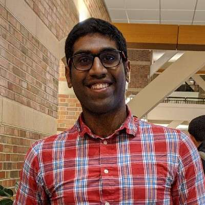

PhD student in Robotics
Vivek Mallampati
I study how a robot team can tell how its human teammate is doing, and change the work they share.
Oregon State University · Advised by Dr. Julie Adams · Human-Machine Teaming Laboratory · Corvallis, Oregon

Selected work
-
2023–
Adaptive human-machine teaming
At Oregon State I work on systems that estimate a teammate’s workload from objective signals, including heart-rate variability, speech rate, and noise level, then adapt how machines allocate tasks. Sponsored by DARPA/NASA and AFOSR.
-
2023
Trait preferences for task allocation
With Harish Ravichandar, I inferred which agent traits matter for a task from expert demonstrations, and used those preferences to allocate heterogeneous robots. Published as an AAMAS extended abstract, following an IROS workshop paper.
-
2023
Unknown rewards in multi-robot teams
With Sukriti Singh, Anusha Srikanthan, and Harish Ravichandar. Coalitions that optimize unknown task rewards while respecting a team’s resource limits. Robotics: Science and Systems.
Now
I am a PhD student in the Human-Machine Teaming Laboratory at Oregon State, where I started in Fall 2023. Before that I completed an MS in Robotics at Georgia Tech in the STAR Lab, and a BS in Mathematics and Computer Science at the University of Illinois Urbana-Champaign.